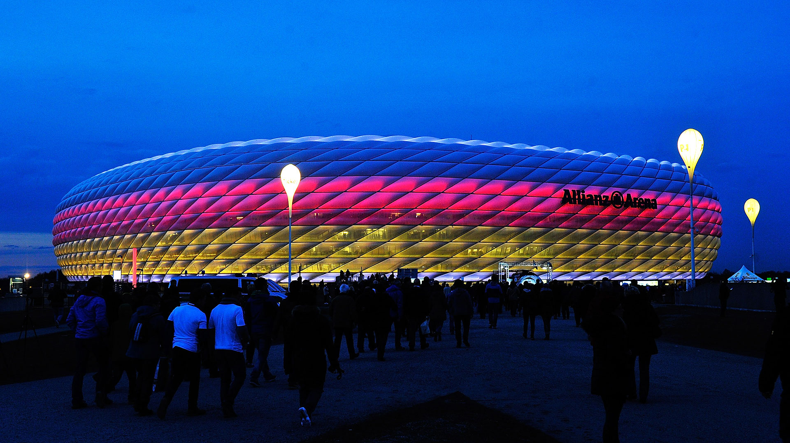

Mundial Alemania 2006
| Principal | Japon y Corea 2002 | Alemania 2006| Sudafrica 2010| Brasil 2014| Rusia 2018| Qatar 2022| Mundiales de la historia |
Alemania albergaría cuatro años después un Mundial que quedaría marcado por dos hechos: la victoria de Italia y la retirada internacional de Zinedine Zidane, que sería expulsado en la final tras propinar un cabezazo a Marco Materazzi. La Nazionale sería tetracampeona del mundo tras imponerse a les Bleus en la tanda de penaltis.
